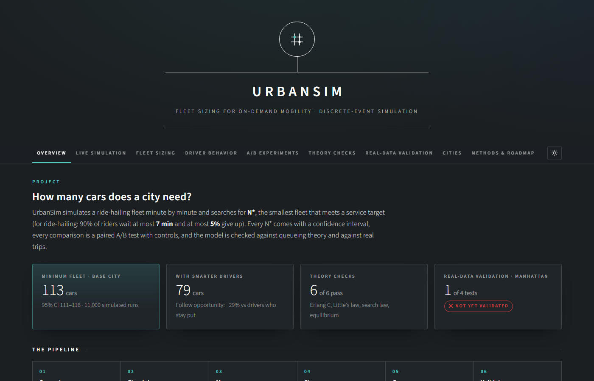
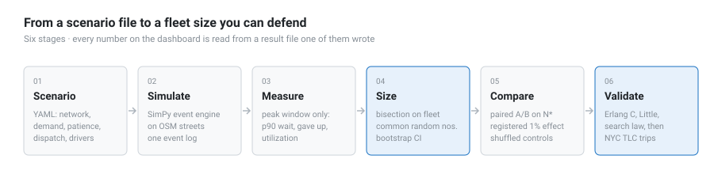

UrbanSim: Fleet Sizing for On-Demand Mobility
A discrete-event simulator that finds the smallest fleet meeting a service target on real street networks, with a confidence interval on every answer, a paired A/B test on every comparison, and validation against queueing theory and 5.3 million real trips
Figures & Results




Project Overview
“How many cars does this city need?” is usually answered with a spreadsheet: trips per hour times minutes per trip, plus a margin. That number ignores where the cars are when a request arrives, so it is always too low, and the margin on top is a guess. UrbanSim answers the question by simulating the fleet minute by minute on the real street network and searching for N*, the smallest fleet whose service meets a target. For ride-hailing the target is: 90% of riders wait at most 7 minutes and at most 5% give up.
The engine is generic: a scenario is one YAML file (network, demand profile, rider patience, dispatch rule, driver behavior), and the same code sizes ride-hailing, demand-responsive transit and rental fleets.
The Central Design Decision
A simulation always produces a number. The work is in knowing how much to trust it. So no result leaves the project without three things:
- An interval, not a point. N* is the smallest fleet whose upper confidence bound meets the target. Each candidate fleet runs 10 to 200 replications until the interval is tight, and the interval on N* itself comes from 2,000 bootstrap resamples.
- A paired comparison, not two runs. Every candidate and every variant reuses the same random seeds (common random numbers). Any difference comes from the one thing that changed, not from luck. Comparisons are A/B tests on N* with a minimum effect registered before the run (1%) and with shuffled and uniform controls. A forecast must beat a shuffled forecast, or it is not information.
- A check against something the simulator did not produce. The model must reproduce closed-form queueing results before it is trusted on a city, and then it is tested against real trips.

Main Products / Deliverables
- Discrete-event engine (SimPy): requests, dispatch (nearest car or batch Hungarian assignment), pickups, abandonment, repositioning. Every leg and decision goes to one event log, and every metric is computed from it.
- Real street networks from OpenStreetMap, versioned by content hash: Cachoeirinha (Brazil), Westminster (London) and Manhattan. That is 2,000 to 3,700 intersections each, with shortest-path travel times.
- Fleet-sizing search: bisection over fleet size with adaptive replications, bootstrap CI and an offline lower bound (the fleet a planner who knew every trip in advance would need, solved as a bipartite matching). The gap between the floor and N* is the price of not knowing the future.
- Driver behavior models: drivers who stay put, who follow recent demand, who choose zones by expected earnings (logit), and a central platform that repositions free cars by solving a transport problem every round.
- Demand generator: non-homogeneous Poisson with a peak, plus a log-Gaussian Cox process calibrated on real trip records.
- Interactive dashboard: nine tabs, including 31 side-by-side replays with clickable driver cards. It is built by one command from the result files, so it can never disagree with them.
How the Model Is Validated
Against theory, 6 of 6 checks pass. With the street network switched off, the simulator reproduces the Erlang C waiting probability at loads of 0.5, 0.8 and 0.9. It also satisfies Little’s law (busy cars = arrival rate × service time) to 0.00% error, the square-root law of search (pickup time falls with the number of free cars with slope −0.43, inside the expected −0.35 to −0.65), and the equilibrium of a market where drivers choose zones by earnings.
Against real data, Manhattan does not validate yet, and the dashboard says so. Against 5.3 million NYC TLC ride-hailing requests, four tests were registered before the run:
- Little’s law on busy cars passes: 4,531 simulated against 4,457 real, within 2%.
- Where waits are long (zone ranking) fails, with Spearman ρ = −0.36.
- The shape of the wait distribution fails: p90/median is 1.42 against 2.33 real.
- Travel times fail: the median error is 16% against a 10% limit.
The diagnosis is written down, not hidden. Short trips run too fast, the city boundary is open (cars and riders cross into the other boroughs), and the model has no acceptance delay. That diagnosis sets the next round.
Is real demand Poisson? At the zone scale the simulator uses, yes: the variance-to-mean ratio is 1.07. City-wide it is bursty (2.01 per minute, 3.32 per 5 minutes). That measurement is why a Cox process, calibrated on the same records, is now in the demand generator.
What the Experiments Found
- Information pays more than control. On the base city, drivers who weigh demand against the free cars already in a zone need 79 cars against 111 for drivers who stay put (−29%). A central platform needs 80. The price of anarchy is about 1, and the same pattern holds in Westminster and Cachoeirinha.
- A smarter platform helps, but not everywhere. It adds a model forecast, counts incoming cars, sets targets by wait and caps travel at 15 minutes. It beats the first platform in 3 of 5 experiment designs. Coordination over well-informed drivers paid off only where the demand center moves.
- Herding is real. Drivers who all chase the same recent demand need 102 cars, almost as many as drivers who never move.
Technologies Used
Getting Started
git clone https://github.com/Calazansmacchiutti/UrbanSims.git
cd UrbanSims
uv sync
uv run urbansim verify # the six theory checks
uv run urbansim size scenarios/base.yaml # N* with a confidence interval
uv run urbansim site # rebuild the dashboard into site/Repository & Live Dashboard
The design notes, every scenario, the result files and 242 tests are in the repository. The dashboard is a static page built from those results.
Open the Dashboard View Project on GitHubResults & Impact
A fleet-sizing method where every answer carries its uncertainty and every claim has a control: N* = 113 cars (95% CI 111–116) on the base city from 11,000 simulated runs, against an offline floor of 55. The theory checks pass 6 of 6, and the A/B gates are registered before the runs (81 gates across 9 experiment designs). The real-data validation failed, and the project reports it as a failure. Showing where the model breaks, and why, is part of the deliverable. It is also what makes the 113 believable.